From the equivalent circuit model, the Zener voltage is,
Substitute  for ,
for ,  for and
for and  for .
for .

Therefore, the Zener voltage,  is 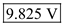.
is 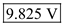.
Draw the circuit for Zener shunt regulator.
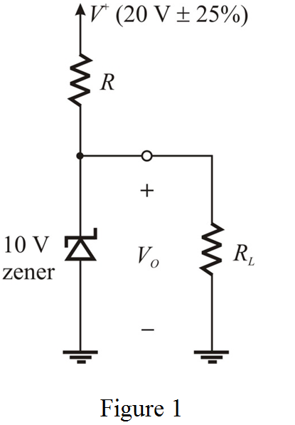
(a)
Redraw the circuit with its equivalent circuit model.
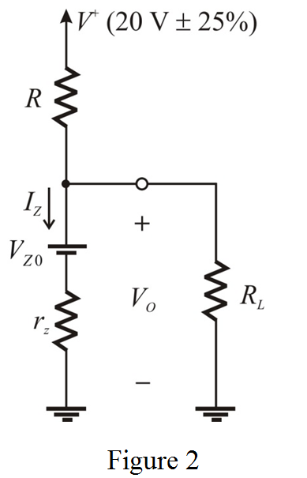
From the equivalent circuit model, the Zener voltage is,
Substitute for , for and for .
Therefore, the Zener voltage, is 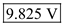.
(b)
The regulator is required to supply a load current of 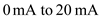, which means the maximum load current is 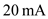.
The minimum Zener current is possible if the current through the load is maximum.
Also, the supply voltage is at its minimum.
Draw the equivalent circuit model for analysis.
Apply Kirchhoff’s Current Law at node a.
From the circuit, the current through the supply resistor is,
Substitute 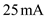 for  , for , for and 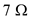 for
, for , for and 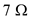 for  .
.
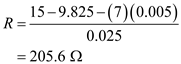
Therefore, the required value of the supply resistor is 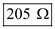.
(c)
Calculate the value of line regulation.
Substitute 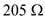 for  and
and  for
for  .
.
Therefore, the value of line regulation is 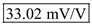
The maximum variation in the supply voltage is,
The change in expressed as a percentage, corresponding to 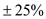 change in is,
Therefore, the required percentage change in the output is 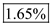.
(d)
The load regulation is,

Substitute for  and
and  for .
for .
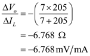
Therefore, the value of the load regulation is 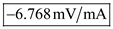
The change in the output voltage is,
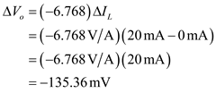
The design output of shunt regulator should be .
Calculate the percentage change in the output voltage.
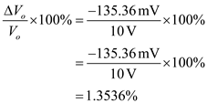
Therefore, the percentage change in the output voltage from no-load to the full-load condition is 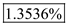.
(e)
The maximum Zener current in the design is possible, when the load current is minimum.
The range of the load current is 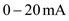
So, the minimum load current is 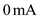.
Also, the supply voltage is at its maximum.
The maximum supply voltage is,
Therefore, the supply voltage is,
Draw the circuit to illustrate the process.
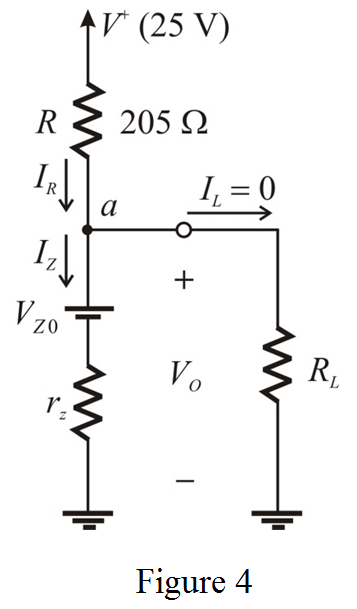
Apply Kirchhoff’s Current Law at node 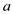.
Calculate the value of Zener current, 
Calculate the value of Zener voltage
Substitute for  , for
, for  and for
and for  .
.
Calculate the current through the supply resistor.
Substitute 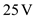 for , 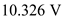 for  and
and  for
for  .
.
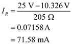
The Zener current is,
Therefore, the maximum current that the Zener is required to conduct is 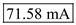.
Calculate the power dissipated by the Zener diode.
Substitute 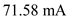 for  and for
and for  .
.
Therefore, the Zener power dissipation is 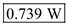.